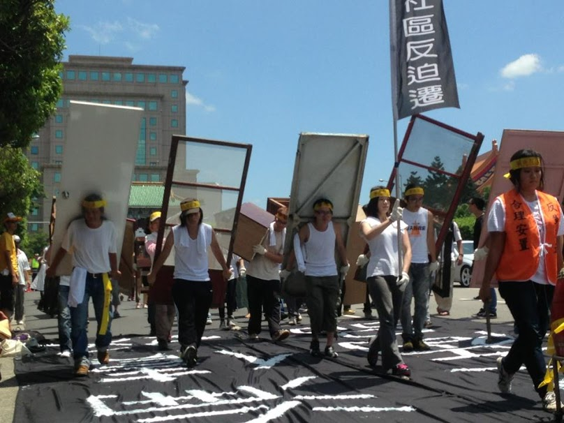

2013年4月24日第二波強拆

過去的監獄口，現在的精華地段。這裡曾存在過一個社區，叫華光。
華光社區位於台北市大安區，總面積約4.9公頃。這裡曾是日治時期的監獄，國民政府來台後改為台北刑務所，其中南邊圍牆還保存下來。除了曾有過的文史意義，華光社區也是近年臺北拆除的最大的非正規住區，引發大規模抗爭和對於居住正義的討論。
社區總戶數約六百戶，居民組成有兩種：一種是1949年隨國民政府遷台的軍隊與公務人員，因為宿舍不足，在 政府容許下就地搭建房屋住下；另一種則是1950年代之後從台灣中南部北上發展的城鄉移民，遷入這個自營聚落居住與謀生。 2000年之後，政府提出「四大金磚」的建設計畫，後又計畫將這裡打造成臺北版六本木。華光社區的土地管理單位法務部將住戶分成合法眷戶、非法眷戶與違建 戶，除了合法住戶獲得補償後離開，另兩類居民自2007年起陸續遭起訴，並被要求拆屋還地與繳納不當得利。不當得利的金額計算方式是以5年的土地價格計 算，再加上判決後到拆遷期間的土地使用補償金，並計以5%的年息，目前居民背負的債務自數十萬到數百萬不等。
2013年8月社區房屋全數拆除，居民有的借住在親戚家，有的自行在外租屋；僅有十個家戶因為低收入戶等身份能暫時獲得平價住宅或中繼安置，但租期 結束後也將面臨居住問題。至於不當的利的部分，許多人至今仍遭強制執行，包括凍結帳戶，扣薪等。許多人因此負擔龐大的經濟與心理壓力。
拆遷4年了，現在的華光社區依然是一片空地。
最初的都市計畫原已進入最終審議卻又翻盤。今年三月，國產署與台北市政府、中華郵政與金管會召開跨部會議，將朝「金融特區」與「台北郵局都更案」兩個方向發展。其中特二、特三區預定成為金融特區，一部分土地撥用作為台北郵局都更時的搬遷點，但南門市場的改建案也預定用這裡作為中繼，目前一切也都還是未知數。未來土地使用能否有更有公益性的使用，還留待關注。